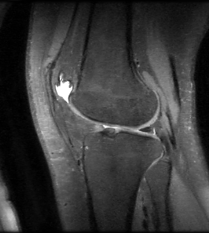

Please direct all questions or comments to the public mailing list:
C/C++ source code (for Linux and MacOS X):
Releases:
Installation of the required libraries and compilation on Linux is usually as simple as:
$ sudo apt-get install libfftw3-dev libgsl0-dev liblapack-dev
$ cd bart_X.YY.ZZ
$ make
See the README file included with source for further instructions.
Perform ESPIRiT calibration and image reconstruction with L1-wavelet regularization:
# ecalib data/kspace sensitivities
# sense -l1 -r0.001 data/kspace sensitivities image_out
The toolbox can also be used in combination with Matlab/Octave.
>> sensitivities = bart('ecalib', kspace);
>> image_out = bart('sense -l1 -r0.001', kspace, sensitivities);
More examples where the tools are called directly from Matlab can be found here:
zip file (4.5 MB)
Martin Uecker, Patrick Virtue, Frank Ong, Mark J. Murphy, Marcus T. Alley, Shreyas S. Vasanawala, Michael Lustig, Software Toolbox and Programming Library for Compressed Sensing and Parallel Imaging, ISMRM Workshop on Data Sampling and Image Reconstruction, Sedona 2013
Martin Uecker, Peng Lai, Mark J. Murphy, Patrick Virtue, Michael Elad, John M. Pauly, Shreyas S. Vasanawala, and Michael Lustig. ESPIRiT - An Eigenvalue Approach to Autocalibrating Parallel MRI: Where SENSE meets GRAPPA. Magnetic Resonance in Medicine, 71:990-1001 (2014)